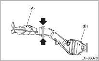

NOTE:
Use a new gasket.
The front catalytic converter is integrated into the front exhaust pipe. Refer to “Front Exhaust Pipe” for the installation procedures. 
1. Attach the front catalytic converter (A) to the rear catalytic converter (B).
Tightening torque:
35 N·m (3.6 kgf-m, 26.0 ft-lb)

2. Install the center exhaust pipe.